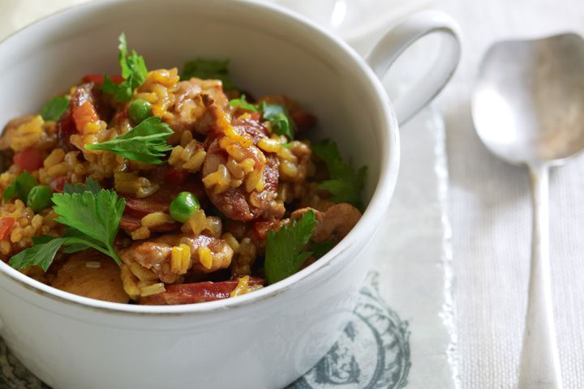

Back Home
Paella

This is a tasty Paella dish with Chicken and Chorizo
If you don't have cooking wine you can substitute with water or extra stock.
Ingredients
- 2 chorizo sausages, thinly sliced
- 4 (600g) chicken thigh fillets, cut into 2cm pieces
- 1 red onion, finely chopped
- 1 red capsicum, seeded, finely chopped
- 2 ripe tomatoes, finely chopped
- 2 tsp sweet paprika
- 1 cup (220g) calrose rice
- 1 cup (150g) fresh peas or frozen peas
- Flat-leaf parsley leaves, to serve
Steps
- Combine the chicken stock, wine and saffron in a small saucepan over medium heat. Bring to a simmer. Remove from heat and set aside.
- Heat a large frying pan or paella pan over high heat. Add the chorizo and cook, turning occasionally, for 2-3 minutes or until golden. Transfer to a plate. Add half the chicken to the pan and cook, turning occasionally, for 2-3 minutes or until brown and heated through. Transfer to the plate. Repeat with remaining chicken.
- Add the onion and capsicum to the pan and cook, stirring, for 5 minutes or until onion softens. Add the tomato and paprika and cook, stirring, for 1 minute or until aromatic. Return the chorizo and chicken and stir to combine. Sprinkle over the rice and pour over the chicken stock mixture. Bring to the boil. Reduce heat to low and cook, uncovered, for 15 minutes or until rice is tender and liquid is almost absorbed. Scatter the peas over the rice and cook, covered, for 5 minutes or until liquid is absorbed. Remove from heat. Sprinkle with parsley. Serve immediately.
>